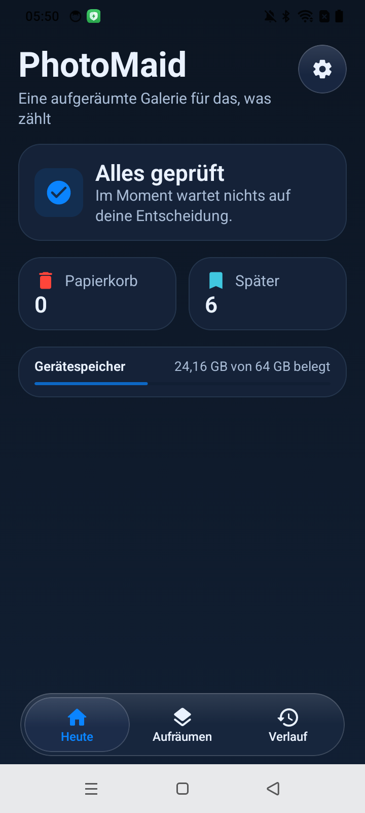

Freigeben
Wähle aus, welche Mediathek oder welchen Ordner PhotoMaid prüfen darf.
Deine Galerie. Dein Tempo.
PhotoMaid hilft dir, Fotos, Videos, Screenshots und freigegebene Ordner auf deinem Android-Gerät in Ruhe zu prüfen – ohne Konto und ohne automatische Löschung.
Lokale Verarbeitung · Du entscheidest selbst · Android 11+

PhotoMaid verarbeitet deine Medien lokal. Es gibt keinen eigenen Upload, kein Benutzerkonto und kein eigenes Backend.
Hoch behalten, links in den Papierkorb, rechts später. Gelöscht wird erst nach deiner Auswahl und Bestätigung.
Die App sieht nur Fotos, Videos und Ordner, denen du in Android Zugriff gibst. Berechtigungen kannst du jederzeit ändern.
Ein ruhiger Ablauf
PhotoMaid ersetzt hektisches Scrollen durch klare Entscheidungen.
Wähle aus, welche Mediathek oder welchen Ordner PhotoMaid prüfen darf.
Behalte, stelle zurück oder lege Medien in den Papierkorb. Eine Geste, ein Schritt.
Du siehst deine Auswahl. Erst deine Bestätigung führt eine Entfernung über Android aus.
Klarheit statt Versprechen
Du entscheidest selbst, was bleibt. Duplikate werden auf deinem Gerät über den Dateiinhalt verglichen; ähnlich aussehende Bilder gelten nicht automatisch als Kopien.